De computer die gewoon werkt.
BugOS is een besturingssysteem dat niet stuk kan, zichzelf bijwerkt en niets over je verzamelt. Gemaakt voor Bugie, en net zo fijn voor gamers en ontwikkelaars.
- Gratis
- Geen account
- 0 trackers
- Gebouwd op Universal Blue, Fedora en KDE
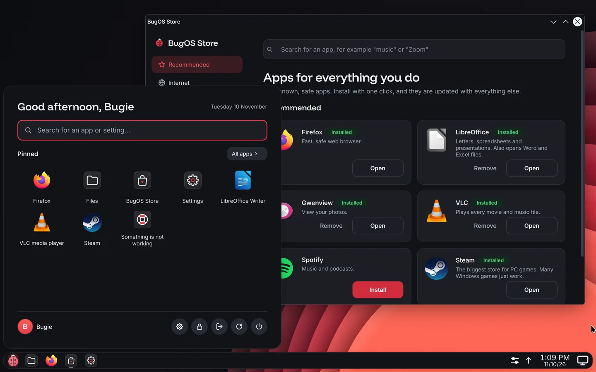
- €0Gratis, en dat blijft zo
- 0Trackers, reclame of accounts
- 2Versies bewaard, altijd
- 1Keuze om terug te gaan naar gisteren
Het verhaal
Een bug is een klein foutje in een computer. Een lieveheersbeestje eet de beestjes op die je planten kapotmaken, en men zegt dat het geluk brengt. Daarom is het ons logo. BugOS ruimt de bugs op, zodat jij gewoon kunt doen waarvoor je achter de computer ging zitten.
Elk deel betekent iets.
- 1
Twee vleugels
Vandaag en gisteren. BugOS bewaart altijd de vorige versie. Gaat er iets mis, dan vlieg je gewoon verder op de andere.
- 2
Vier stippen
Vier beloftes: het kan niet stuk, het is makkelijk, het is van jou en het is gratis.
- 3
Een vriendelijke kop
Met twee witte vlekjes, net als een echt lieveheersbeestje. BugOS is nooit eng.
Het hele beestje is getekend met ronde vormen en één rechte lijn: de spleet tussen de vleugels.
Onze regel: de Bugie-test
“Snapt Bugie het niet, dan maken we het opnieuw.”
Dat is de Bugie-test. Elke knop, elk woord en elk scherm in BugOS moet erdoorheen. Snapt Bugie het, dan snapt iedereen het.
Grote knoppen
Alles is groot genoeg om te raken, ook zonder bril.
Gewone woorden
Geen computertaal. Er staat gewoon wat er gebeurt: "Maak een back-up", "Kies een USB-stick".
Niets kan stuk
Elke update is een complete nieuwe versie. De vorige wordt altijd bewaard.
Niets verdwijnt
BugOS gooit nooit zomaar iets weg. Ook niet tijdens een back-up of een update.
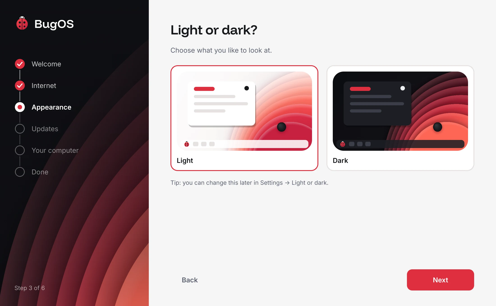
Eén computer. Iedereen thuis.
Het hele gezin deelt één computer. Zo ziet een gewone dag met BugOS eruit.
-
De computer staat klaar.
Je zet de computer aan. De updates zijn vannacht al gedaan, rustig op de achtergrond. Je merkt er niets van.
Automatische updates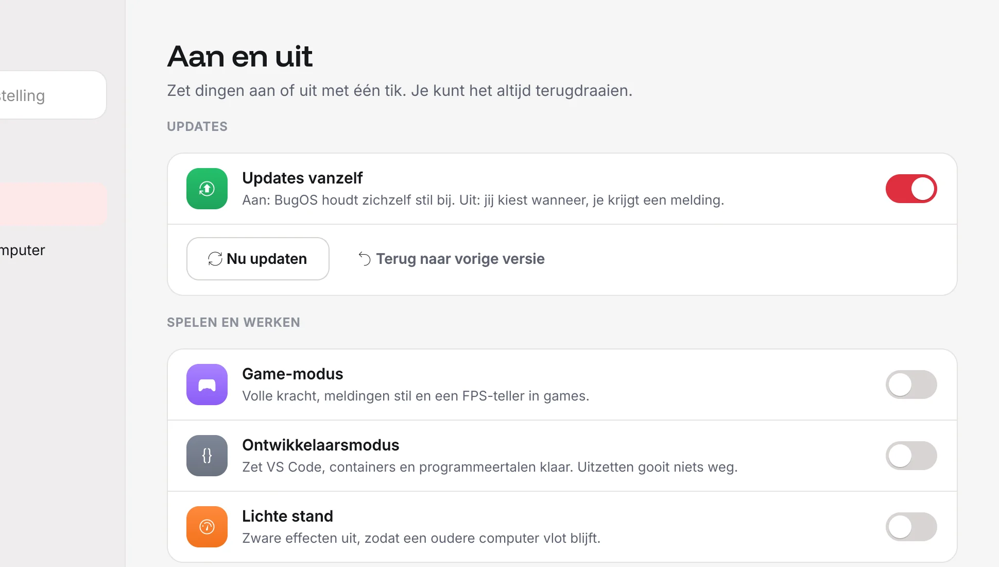
-
De printer doet raar.
Open "Er werkt iets niet". BugOS controleert de wifi, het geluid, de printer en meer. Is er een probleem, dan is er een knop die het voor je oplost.
Hulp met één klik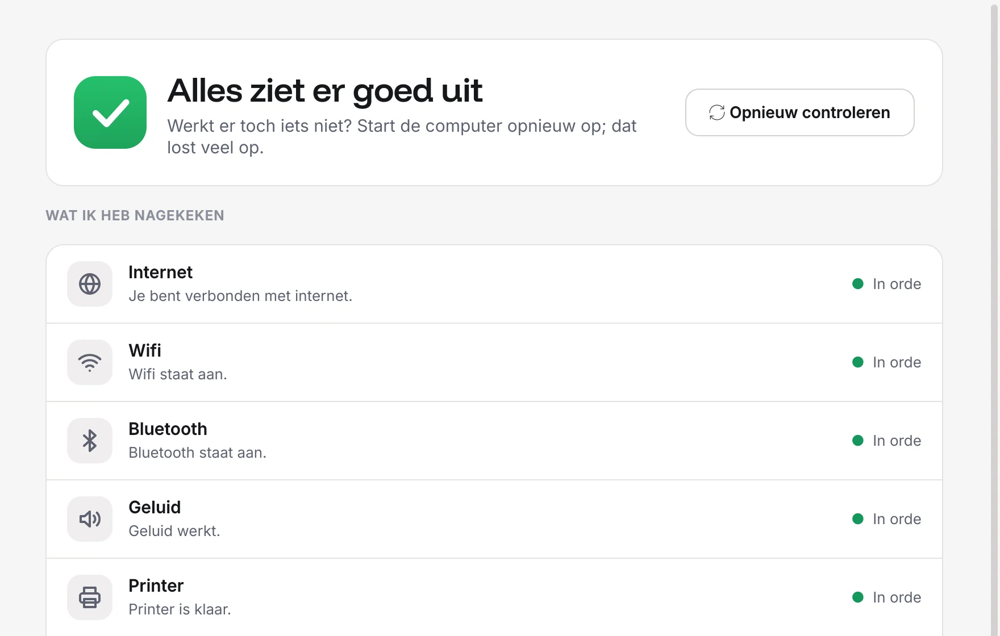
-
De vakantiefoto's.
In Bestanden hebben je foto's, documenten en downloads elk hun eigen plek, net als in Windows. Je ziet meteen een klein voorbeeld van elk bestand. Klik iets aan, en onderin staat wat je ermee kunt doen.
De verkenner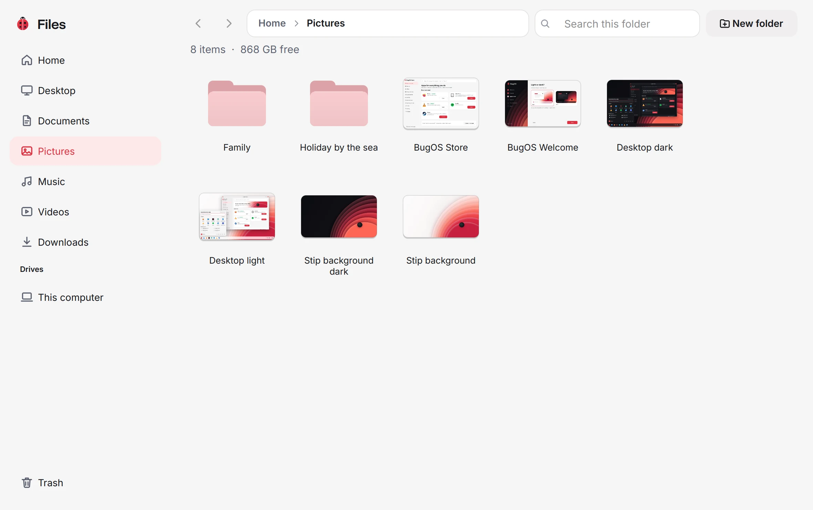
-
Een app halen.
De BugOS Winkel heeft 60+ bekende, veilige apps, en vindt ook elke andere app op Flathub. Eén klik op Installeren en klaar. Heb je hem niet meer nodig? Elke app kan weer weg in Mijn apps.
De BugOS Winkel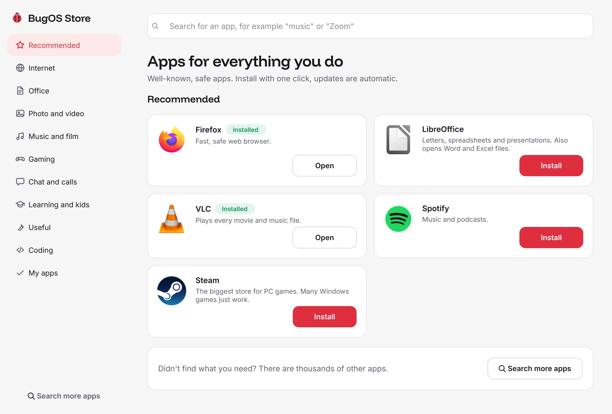
-
Tijd om te gamen.
Game-modus aan in het snelmenu, controller erin, spelen. Steam staat al voor je klaar, en de Nvidia-versie van BugOS heeft de juiste driver ingebouwd.
Voor gamers -
Tijd om te programmeren.
Instellingen → Apps en gamen → Ontwikkelaarsmodus. Eén schakelaar zet VS Code, containers en programmeertalen klaar. Alles woont in een eigen doosje, dus het systeem blijft heel. Niemand anders thuis ziet er iets van.
Voor ontwikkelaars# Ontwikkelaarsmodus staat aan$ distrobox enter dev$ git clone https://github.com/253UgurSahin/BugOS$ code BugOS✓ klaar om te programmeren
Ging er iets mis? Kies gisteren.
BugOS wordt in zijn geheel bijgewerkt, als één nieuwe versie. De vorige versie blijft bewaard. Werkt er na een update iets niet? Kies dan bij het opstarten de versie van gisteren, en alles is weer zoals het was.
- Updates gaan vanzelf, rustig op de achtergrond
- Pas actief na een herstart, nooit midden in je werk
- Liever zelf kiezen? Eén schakelaar in Instellingen
Alles wat je nodig hebt. Niets wat je niet snapt.
-
Back-up met één knop
Steek een USB-schijf in, druk op de knop en je documenten, foto's, muziek en video's zijn veilig. Er wordt nooit iets weggegooid.
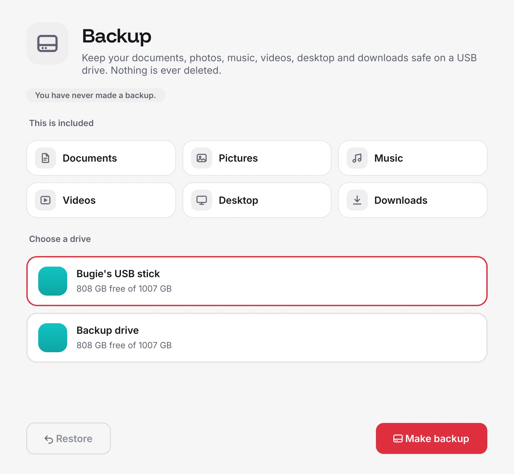
-
Eén zoekbalk voor alles
Open het startmenu en typ wat je zoekt: een app of een instelling.
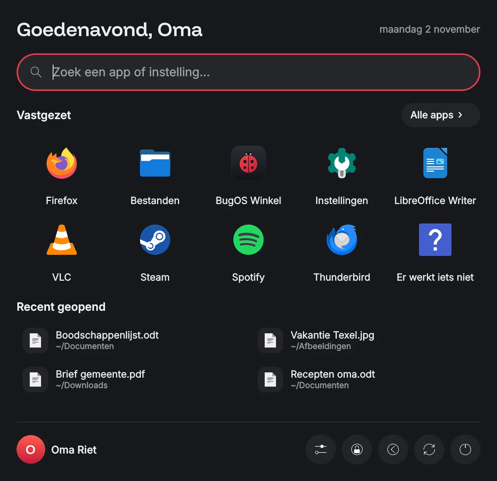
-
Windows-programma's
Dubbelklik op een .exe en hij start. Is er een betere versie voor BugOS? Dan zegt BugOS het je.
-
Snel op oude pc's
Weinig geheugen? BugOS zet de zware effecten vanzelf uit.
-
Films en muziek
Alle gewone bestanden spelen meteen af. Niets extra nodig.
-
Bestanden uit Windows
Neem je documenten, foto's, bladwijzers en zelfs je achtergrond mee van je oude computer.
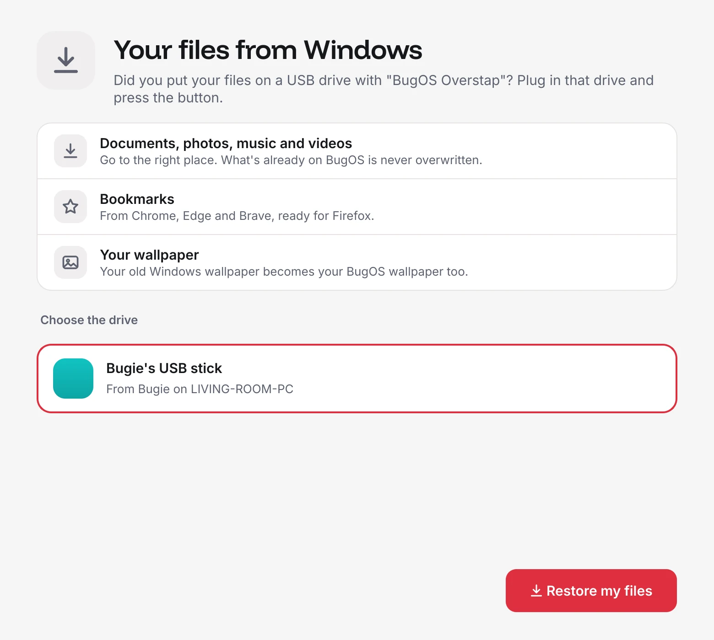
-
Instellingen in gewone woorden
Alles op één plek, in woorden van elke dag. De schakelaars die je het meest gebruikt staan bovenaan.
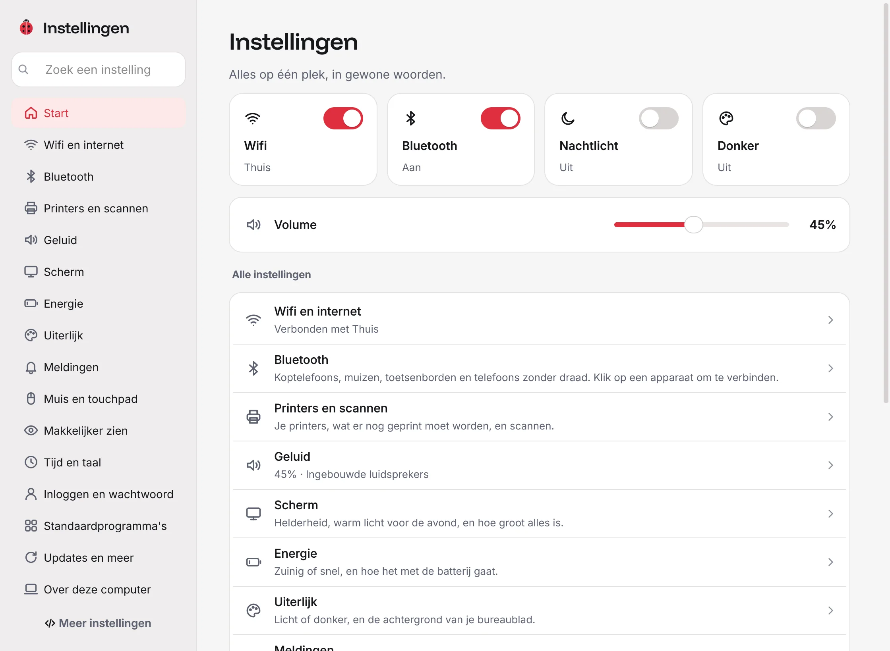
-
In jouw taal
Standaard Engels, en Nederlands en andere talen staan ook klaar. Vrijwilligers vertalen zonder code te schrijven.
-
Nvidia en controllers
De juiste driver zit erin. Xbox- en PlayStation-controllers werken meteen.
-
Licht of donker
Kies waar je graag naar kijkt. Alles doet mee. Probeer het hieronder.
Jij kiest.
Ga je gang, schuif maar heen en weer. Elke app, elk menu en de achtergrond doen mee.
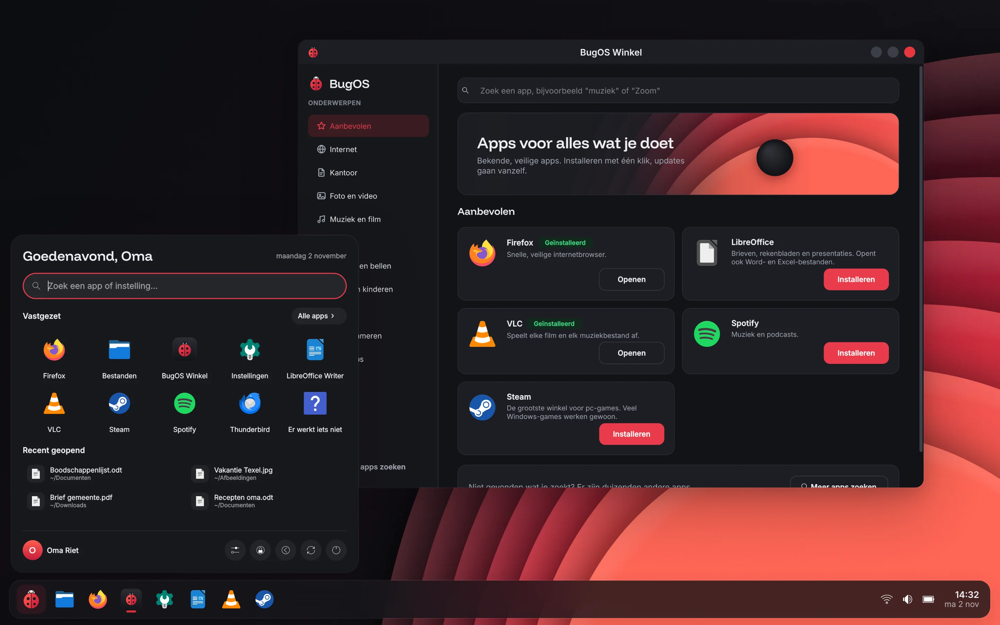
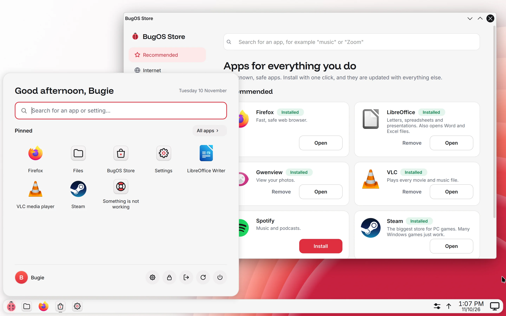
LichtDonkerPrivacy
- trackers
- reclame
- accounts
Je computer is van jou. BugOS verzamelt niets, laat geen reclame zien en vraagt nooit om een account. Deze website gebruikt ook geen cookies.
Van Windows naar BugOS in vier stappen.
Het programmaatje BugOS Switch doet het zware werk op je Windows-computer. Er gebeurt niets tot jij op een knop drukt.
- 1
Controleren
Kan je computer BugOS aan? BugOS Switch kijkt het voor je na.
- 2
Meenemen
Je bestanden, bladwijzers, achtergrond, instellingen, wifi-namen en printers gaan naar een USB-schijf. Wachtwoorden nooit.
- 3
Ruimte maken
Wil je Windows houden? Dan maakt BugOS Switch ruimte, zodat BugOS ernaast past.
- 4
USB-stick maken
BugOS wordt gedownload, gecontroleerd en op een USB-stick gezet.
In BugOS zet "Haal alles van je oude pc" alles met één knop terug. Toch niet? "Alles terugdraaien" maakt het weer zoals het was.
Wat heb je nodig?
| Onderdeel | Minimaal | Fijn om te hebben |
|---|---|---|
| Computer | 64-bit, Intel of AMD | Uit de laatste 10 jaar |
| Geheugen | 4 GB | 8 GB of meer |
| Opslag | 40 GB | 128 GB, op een SSD |
| USB-stick | 8 GB | 16 GB |
| Videokaart | Intel, AMD of Nvidia | Nvidia GTX 16 of RTX |
Vragen
Is BugOS echt gratis?
Ja. BugOS is gratis en blijft gratis. De broncode is open (GPL-3.0), dus iedereen kan zien hoe het werkt. Er is geen reclame en je hebt geen account nodig.
Werken mijn Windows-programma's?
Veel wel. Dubbelklik op een .exe en BugOS start hem met Wine. Voor bekende programma's, zoals Spotify of Zoom, biedt BugOS meteen de echte BugOS-versie aan. Sommige programma's, zoals Adobe of de nieuwste Office, werken niet; daarvoor stelt BugOS een goed alternatief voor.
Kan ik Windows houden?
Ja. BugOS Switch kan Windows wat kleiner maken, zodat BugOS ernaast past. Bij het opstarten kies je welke je wilt gebruiken.
Wat als een update misgaat?
Dan kies je bij het opstarten de versie van gisteren. Alles is weer zoals het was. Het kan ook vanuit Instellingen, met de knop "Terug naar de vorige versie".
Is het goed om op te gamen?
Zeker. Steam met Proton zit erin, controllers werken in Steam-games en de game-modus haalt het meeste uit je computer. Games met strenge anti-cheat (sommige online shooters) werken soms niet; kijk voor de zekerheid op protondb.com.
Werkt mijn printer?
De meeste printers werken meteen. Die van jou niet? Open dan "Er werkt iets niet": BugOS kijkt het na en helpt je de printer toe te voegen.
Is BugOS veilig?
Ja. Programma's kunnen het systeem zelf niet veranderen, apps draaien in hun eigen afgesloten ruimte en updates komen vanzelf. Elke update draagt de eigen handtekening van BugOS, en je computer weigert er een zonder. En BugOS verzamelt niets over je.
Gaan mijn wachtwoorden mee uit Windows?
Nee, nooit. BugOS Switch neemt je bestanden, bladwijzers, instellingen, wifi-namen en printers mee, maar geen wachtwoorden: niet van je wifi, niet uit je browser en niet van je e-mail. Je meldt je in BugOS nog één keer aan, en klaar.
Nieuw in BugOS 0.4.
Veiligere updates, slimmer overstappen vanaf Windows en heel veel kleine dingen die elke dag makkelijker maken.
-
Ondertekende updates
Je computer installeert alleen een update met de eigen handtekening van BugOS. Zelfs iemand die in ons account inbreekt, kan je geen nep-update sturen.
Veiligheid -
Haal alles van je oude pc
Bestanden, extra mappen, bladwijzers, instellingen, wifi-namen, printers, lettertypen en e-mail. Nooit een wachtwoord. Toch niet? Alles terugdraaien.
Overstappen -
Taakbeheer
Ctrl+Shift+Esc, net als in Windows. Het zegt in gewone woorden hoe het met je computer gaat, en sluit een programma dat vastzit.
Nieuwe app -
60+ apps, en elke app kan weg
De Winkel heeft meer apps en zoekt in heel Flathub. Firefox en Steam zijn nu gewone apps, dus je kunt alles verwijderen in Mijn apps.
BugOS Winkel -
Rechtsklikken in het startmenu
Elke app heeft zijn eigen menu, zoals in Windows 11: een nieuw venster openen, vastzetten aan Start of de taakbalk, of verwijderen.
Startmenu -
Eerst Engels, gemaakt voor iedereen
BugOS start in het Engels en werkt met de datum, tijd en het toetsenbord van jouw land. Je kiest je eigen taal tijdens het installeren.
Talen
Alle details? Bekijk alle wijzigingen op GitHub.
Probeer BugOS.
Het is gratis.
Start vanaf een USB-stick en kijk eerst rond. Je computer verandert pas als je op "BugOS installeren" drukt.
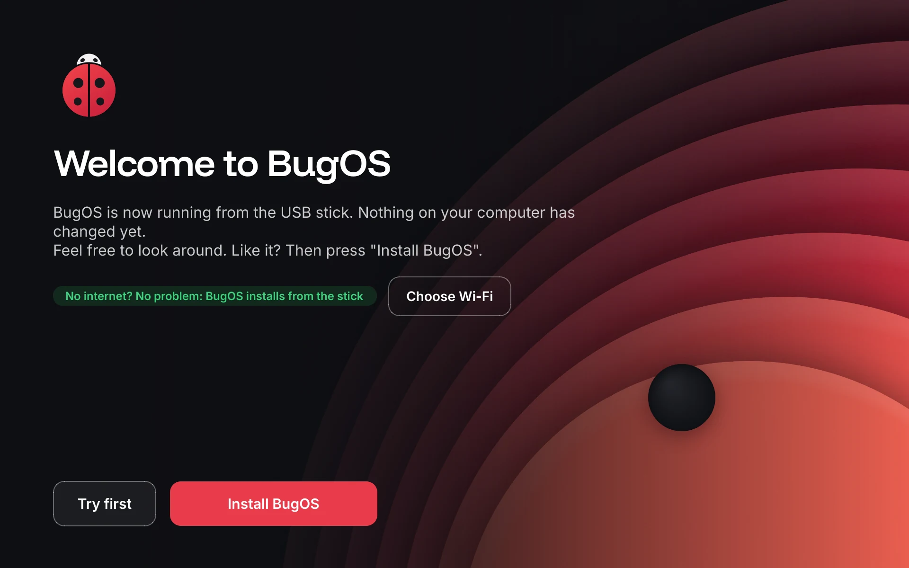
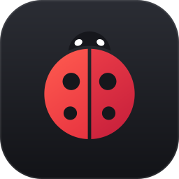
BugOS
Voor de meeste computers en laptops, met een Intel- of AMD-processor.
Download (.iso) Ongeveer 5,6 GB · 64-bit · ControlegetalBugOS voor Nvidia
Heb je een Nvidia-videokaart (GTX 16 of RTX)? Dan zit de juiste driver er al in.
Download (.iso) Ongeveer 6 GB · 64-bit · ControlegetalNog op Windows?
BugOS Switch kiest de juiste versie, neemt je bestanden mee en maakt de USB-stick voor je.
BugOS Switch (.zip) Voor Windows 10 en 11Al op Fedora Atomic of Bazzite?
Stap over zonder USB-stick. Typ dit in de terminal en start opnieuw op:
sudo bootc switch ghcr.io/253ugursahin/bugos:latestWat heb je nodig?
- 64-bit computer
- 4 GB geheugen
- 40 GB vrije ruimte
- 8 GB USB-stick
BugOS is nog in ontwikkeling (versie 0.4). Probeer het eerst op een reservecomputer of in een virtuele machine.